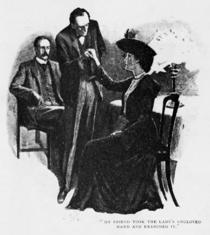
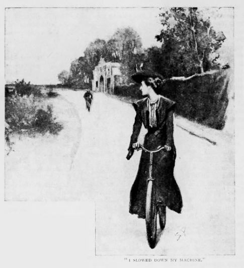
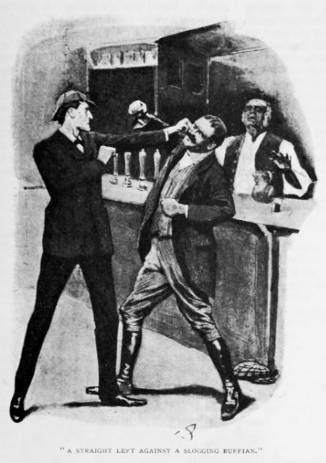
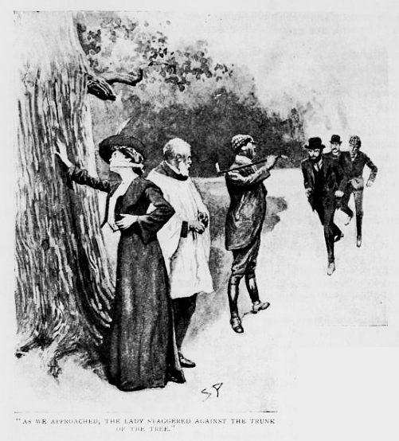
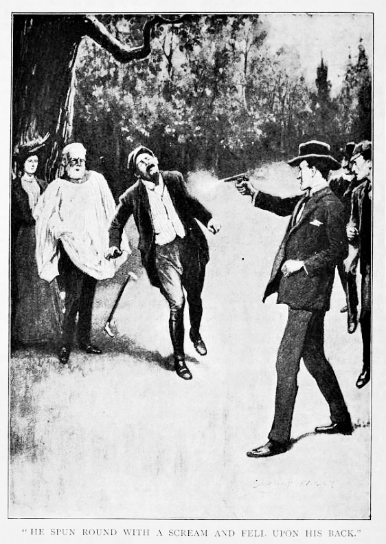
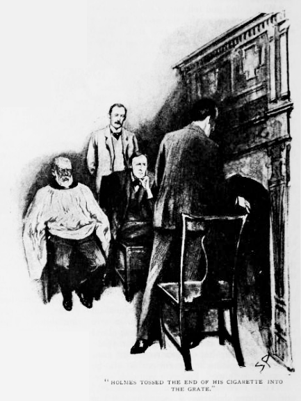

一八九四年から一九〇一年に至るまで、シャーロック・ホームズは多忙の身であった。この八年、有名な難事件で持ち込まれなかったものはないと言っていいだろうし、また何百という個人依頼、およびそのうちの複雑怪奇なものでも颯爽たる役を果たした。多くの驚嘆すべき成功とわずかな避けられぬ失敗、これが長きにわたる間断ない仕事の結果であった。私はこれら全事件の完全なる記録を残している上、少なからず自身も関わっているのであるから、公表するものとして選ぶべきは何か、その判断が容易ならざることはご想像いただけよう。とはいえ、以前よりの方針を守り、関心の元が犯罪の残忍性になるものよりも、解決が見事かつ劇的であったものを選ぶことにしたい。以上の理由により、ここで私が読者諸君に提示するのは、ヴァイオレット・スミス嬢とチャーリントンにおける自転車乗りの影、そして我々の調査が不思議な巡り合わせで思いも寄らぬ悲劇へと至った諸々の一部始終である。実のところ、わが友人の評判たる手腕は子細あってさほど目立った活躍をしなかったのだが、この事件のところどころには、私がこのささやかな連載のために素材として集めた一大記録のなかでも、出色のものがあると言えよう。
一八九五年の覚え書きを開いてみると、我々が初めてヴァイオレット・スミス嬢を知ったのは四月二三日の土曜とある。思い出してみると、彼女の訪問はホームズにとってきわめて歓迎できぬものであった。というのも当時、煙草成金として有名なジョン・ヴィンセント・ハーデンを襲った厄介な謎についての、込み入った難事件に没頭していたのだ。わが友人は何よりもまず精密に考え詰めることを旨としているだけに、手元から気を逸らされると憮然としてしまう。とはいえ、柄にもなく冷たくせねば拒みようもない。なぜなら、すらりとしてたおやかなうら若き美人が夜分遅くにベイカー街に現れ、話を聞いてご助力ご助言くださいましと来たのだから。暇がまったくないのだと言い張っても詮無く、この若いご婦人は何としても話をする覚悟で、それが終わるまでは無理矢理追い出すほかないようであった。そこであきらめたとばかりに苦笑して、ホームズはこの美しき乱入者に座るよう言い、何にお困りですかと促すのだった。
「少なくとも健康問題ではありませんね。」と友人は例の鋭い視線を依頼人に送る。「それだけ熱心に自転車をお乗りなら体力もおありでしょう。」
依頼人は驚いて足元に目をやった。靴底の横側が踏板の縁にこすれて軽くささくれ立っているのが、私にも見て取れた。
「ええ、自転車にはかなり乗りますが、ホームズ先生、本日参りましたのもそれに関わりがございまして。」
わが友人は、手袋を外したご婦人の手を取り、科学者の標本に対するがごとく注意深く淡々とあらためる。

「失礼はお許しを。仕事なもので。」と手を離しながら言う。「今少しでタイプ打ちの方と見誤るところでした。なるほど音楽に相違ない。ほらワトソン、指が平たくなるのは両者に共通しているだろう？ ところが顔に気迫がおありだ。」――友人は依頼人の顔を灯りの方へ向ける――「タイプ打ちでこうはならない。お嬢さんは音楽家だ。」
「はい、ホームズ先生、音楽教師でございます。」
「その血色からして、おそらく田舎の方に。」
「はい先生、サリーの端、ファーナム近郊に。」
「美しいあたりで、色々と実に面白いことどもを思い出します。ほらワトソン、その付近で偽造犯のアーチィ・スタンフォドを一緒に捕まえた。さてヴァイオレットさん、そのサリーの端のファーナム近くで、何に見舞われたのです？」
その若いご婦人は、実に落ち着き整理して、次のような奇妙な物語を始めた。
「父は故人なのです、ホームズ先生。名前はジェイムズ・スミス、旧帝劇楽団の指揮者でした。母とわたくしは他に身よりもなく、親類といっても二五年前アフリカに行ったきり音沙汰ないラルフ・スミスという伯父がいるきりです。父が亡くなった当座は貧しいままでしたが、ある日タイムズ紙上にわたくしどもの消息を訪ねる広告があると伺いました。舞い上がったことはおわかりでしょう。すわ誰かの遺産かと思ったのです。早速、新聞に示された弁護士の元へ参りました。そこでお会いしたのがふたりの紳士で、カラザズさんとウッドリさん、南アフリカから帰国なさった方です。お話ではわたくしどもの伯父と友人で、当の伯父は数ヶ月前ヨハネスブルグで貧困のうちに亡くなり、遺言で親類を捜し当て困窮してないか確かめてくれと託されたそうで。生前は便りもなかった伯父のラルフが死後わたくしどもの世話を気にかけるというのも変に思われましたが、カラザズさんの説明によれば、弟の死をちょうど耳にして伯父はわたくしどもの巡り合わせに責任を感じたのがその理由だそうです。」
「失礼。」とホームズ。「その会見はいつ？」
「昨年の一二月――四ヶ月前になります。」
「どうぞ続きを。」
「ウッドリさんにはひどく嫌らしい人だという印象を。始終わたくしに目を向け――下品で膨れ面、赤髭の若い方で、額の両側に髪をなでつけて。まったく腹立たしい方だと思います――きっとシリルならこんな人には顔も会わせてほしくないと。」
「ふむ、お相手の名はシリルと！」ホームズは顔をほころばす。
この若いご婦人は顔を赤らめ声を上げる。
「はいホームズ先生、シリル・モートン、電気技師でこの夏の末には結婚するつもりです。まあ、どうしてわたくしこんな話を。申し上げたいのは、ウッドリさんは実にいやらしい方なのですが、カラザズさんの方はお年をお召しでも感じのいい方で。黒髪で血色も悪く、髭もなく寡黙なのですが、礼儀正しく笑顔も素敵です。あの方はわたくしどもの身の上を尋ねられて、ひどく貧しいとわかるや、一〇歳になる一人娘の音楽教師として来ないかとお誘いを。わたくしが母のそばは離れたくないと申しますと、週末は家に帰って構わない、年に一〇〇払うと。破格のお給金です。それで受けることに決まりまして、ファーナムから六マイルばかり離れたチルタン・グレインジという屋敷へ出向きました。カラザズさんは奥さまを亡くされてましたが、家の切り盛りについてはディクソンさんという立派な年輩の家政婦をお雇いで。お子さまはかわらしく、みなうまくゆくはずでした。カラザズさんはお優しく音楽もお好きで、夕べの集いはとても楽しいものでした。そして週末になると街にいる母のところへ帰る次第です。
わたくしの幸せに入った第一のひびは、あの赤髭のウッドリさんが来たことです。滞在は一週間でしたが、ああ！ わたくしには三ヶ月にも思えて。とんでもない人でした――誰にとっても横暴ですが、わたくしに対してははるかにひどく。いやらしく言い寄ってきて、自分の財産を自慢し、結婚したらロンドン一のダイヤをやろうとも言いまして、あげくいつもわたくしが取り合わないものですから、ある日の夕食後、わたくしの腕をとって――しかも恐ろしい力で――口づけしてくれるまで放さないと言い立てるのです。カラザズさんが間に入って引き離してくれましたが、あの男は家主に飛びかかって殴り倒してしまい、顔に怪我まで。訪ねてきたのがそれきりなのは申し上げるまでもなく。明くる日カラザズさんは謝ってくださって、こんな無礼には二度と遭わせないとわたくしにお誓いを。以後ウッドリさんは見ていません。
ここからがホームズ先生、いよいよ本日ご相談にあがりました特別の事情になるのですが、まずわたくしが毎週土曜の午前に、一二時二二分の街行へ間に合うようファーナムの駅まで自転車に乗ることをご承知おきください。チルタン・グレインジからの道のりはひとけがなく、とりわけひどいところが一ヶ所ございます。ちょうど一マイルほどにわたっておりまして、片側がチャーリントンの荒れ地、もう片側がチャーリントン館をめぐる林になりますから、あれほどひっそりしたところはどこにもないと言っていいほどで。クルックスベリの丘近くの街道に来るまでは荷馬車一台、いえ農夫ひとりに会うことさえありません。二週間前、このあたりを通っておりました折、ふと肩越しに振り返ってみますと、二〇〇ヤードほど後ろに男がひとり見えまして、同じく自転車に。中年の男らしく、黒く短い

その軽馬車は今週来るはずでしたが、何かのわけで届かず、わたくしはまた自転車で駅まで行くことに。今朝のことです。ご想像通り、チャーリントンの丘にさしかかるあたりで目を見張ると、またしても男がいたのです、二週間前と同じように。いつもわたくしから離れてますから、顔ははっきりと見えませんが、見知らぬ相手なのは確かです。服の上下は黒で、布地の帽子を。顔のあたりでわかることといえば、黒い顎鬚だけで。今日は驚きこそしませんが、妙に気になって参りまして。何者で何が目的なのか、暴いてやろうと考えました。わたくしは自転車の速度をゆるめたのですが、向こうもゆるめましたので、そこで完全に止めてみるとやはり向こうも止まって。ですのでわたくし、相手をひっかけてみたんです。その道には急な曲がり角がありまして、わたくしは全力で漕いで素早く曲がり、そこで止まって待ちました。予想では相手が急に曲がって止まれずにわたくしの前を通り過ぎるはずだったのですが、現れないのです。そこでわたくしは引き返して、角から後ろをのぞいてみますと、一マイルの道のりが見えるだけで、相手はいません。その上おかしなことに、その地点には入り込むような横道はないのです。」
ホームズはほくそ笑んで手をこすり合わせて、「なかなか特色ある事件だ。」と言い、「角を曲がってから道が無人だと気づくまでの所要時間は？」
「二、三分かと。」
「では相手は道を引き返せず、なおかつ横道はないとおっしゃる？」
「はい。」
「では相手は両側のどちらかに踏み入ったことに。」
「荒れ地側はありえません。見えますから。」
「と、消去法でチャーリントン館へ道を取ったのが正しいことに。確か道の片側に敷地があるのでしたね。他には何か？」
「ございません、ホームズ先生。ただ何が何だかわからなくて。お会いしてご助言いただくまで心が安まらず。」
ホームズは黙ったまま、しばらくじっとしていた。
「婚約された紳士の方はどちらに？」とようやく口を開く。
「コヴェントリの中部電気会社におります。」
「不意にあなたを訪ねてくることは？」
「あらホームズ先生！ そんなふたりが他人みたいに？」
「それまで他にあなたを慕う人は？」
「シリルと会う前に幾人か。」
「後は？」
「あの嫌らしい人、ウッドリが。仮に想い人としましたら。」
「他には誰も？」
この美しい依頼人はやや戸惑っているようだった。
「誰なのですか？」とホームズが問いつめる。
「その、これは単なるわたくしの思い違いかもしれません。ですけど時折、雇い主のカラザズさんが、わたくしにお心あるらしく思えることも。ふたりきりになることだって。夜にはあの方の伴奏をつとめます。あの方は何もいいませんし、立派な紳士ですが、女はいつも気づくもので。」
「ふむ！」とホームズの顔は真面目だ。「その方、生計の方はどうやって？」
「お金持ちですから。」
「馬車や馬もないのに？」
「ともかく暮らしぶりはよくて、でも週に二、三度はロンドンへ出てまして、何でも南アフリカの金鉱の株にとても興味がおありだとか。」
「ではまた何か進展がありましたらお知らせを、スミスさん。現在は多忙なのですが、いずれあなたの件をお調べする暇もできるかと。それまでは、断りなく事を進めぬよう。さようなら、よい知らせが来るよう願っております。
自然の摂理に基づけば、ああいう娘にはつきまとう男がいるものだ。」とホームズは瞑想用のパイプを取り出す。「しかしわざわざひとけのない田舎道で自転車に乗ることもないだろうに。人に明かせぬ恋の類なのは何より相違ないが、にしてもこの事件には奇妙な裏がありそうだ、ワトソン。」
「ある場所にだけ男が現れるというあれかね？」
「まさしく。僕らのまずやるべきは、チャーリントン館の居住者が何者か探ることだ。それからまた、カラザズとウッドリはどういう関係なのか。どうもこれほど性格が異なっていてはね。そもそもどうしてこのふたりがラルフ・スミスの親類を探し出そうと躍起になったのか。さらにもうひとつ。家庭教師に相場の二倍払いながらも馬一頭もないとはどういう家計になっているのか。駅から六マイルもあるというのに。おかしいね、ワトソン――実におかしい！」
「行くのかね？」
「僕でなく君がね。案外ちんけなたくらみかもしれぬし、そのために他の大事な調査を中断するわけにはいかない。月曜の朝、ファーナムへ行って、チャーリントンの荒れ地近くに身を隠してくれたまえ。実際にその目で確認したら、あとは自分の判断で動くこと。それから館の住人についても調べた上で、帰って僕に報告を。さてワトソン、話はここまでだ。何か足がかりでも見つけて、解決へと向かえでもしないかぎりは。」
ご婦人の話から、本人が月曜九時五〇分ウォータルー発の列車で発つと知っていたので、私は早めに出かけて九時一三分に乗った。チャーリントンの荒れ地までの道は、ファーナム駅で難なく聞けた。若いご婦人の受難の地も見紛うところではなく、開けた荒れ地とイチイの藪に挟まれて道が伸びており、藪の奥に巨木がちらほら見える館の広場があった。苔むした正門には両の柱に崩れた紋章がついていたが、この正面の車道のほか何ヶ所か藪が途切れており、狭い抜け道になっているらしい。館は表の道からは見えないが、周囲の様子から荒廃していると思われた。
荒れ地ではハリエニシダが一面花盛りで、春の明るい日差しを浴びて燦爛と輝いている。私は茂みのかげ、館への車道と道の端から端までを見渡せる位置に身を潜めた。場所に着いたときには人もなかったが、やがて来た方とは反対から、自転車に乗った人影が現れた。男は上下黒に身を包み、黒の顎鬚も見て取れる。チャーリントンのあたりに来ると、男は自転車から降りて、藪の隙間へと忍び込んで姿が見えなくなった。
一五分が経って、また別の自転車が現れる。今度は駅からやってきた例の若きご婦人だ。チャーリントンの藪まで来ると、あたりを気にし始めた。少し遅れて男が隠れた場所から出てきて、自転車に飛び乗り、ご婦人を追いかける。一望した景色のなかで動いているのはふたりだけで、一方は自転車にすっくと乗った優雅な女性、もう一方はその後ろで取っ手に身を屈め、その動きひとつひとつがこそこそとして妙に曰くありげな男。依頼人は振り返って男を見ると、速度を落とす。男も同じくする。依頼人止まる。男もすぐ止まり、二〇〇ヤードほど距離を取ったままにする。依頼人の次の行動は思いがけない突飛なものであった。いきなり車体を反転させると、相手に向かってつっこんでいったのだ。だが相手もまた同じくして、死に物狂いで逃げ出した。ほどなくして依頼人は自転車を元に戻して、胸を張って無口の相手にはもう目もくれぬと進んでいく。するとまたも男は向きを変えて、距離を取ったまま、やがて道の角に入って見えなくなった。
なお私は隠れたところにいたが、結果として功を奏した。そのうち例の男がまた現れ、自転車でゆっくりと引き返してきたのだ。館の門のところで内側に入り、自転車から降りる。しばらく林のなかでたたずんでいるのが見えた。手が動いており、ネクタイを結び直しているようだ。そのあと自転車にまたがり、私から見て奥に当たる館への道を進んでいった。私は荒れ地を動いて木のあいだからのぞき込む。遠くの方にテューダー朝様式の煙突の数々そびえ立つくすんだ古屋敷がちらちら見えたが、車道はうっそうとした木々のあいだを通っていて、男の姿はもはや見えない。
とはいえ、自分にはこの朝、実にいい仕事をしたと思えたので、意気揚々とファーナムへ歩いて戻った。現地の不動産仲介人はチャーリントン館について何も語れず、ペル・メルの有名な会社を紹介された。そこで帰るついでに立ち寄ると、そこの仲介人は丁寧に応対してくれた。いやあ、チャーリントン館は夏のあいだは無理ですよ、ちょっと遅すぎましたね、一ヶ月ほど前に貸しました、ウィリアムソンさんというのが借り主の名前で、立派な老紳士です。丁寧な仲介人はこれ以上言えないと恐縮していたが、むろん客のことはむやみに話せることでもない。
シャーロック・ホームズ先生はその夜、私の出し得た長い報告を傾聴なさっていたが、ひとつの誉め言葉さえなかった。自信があったのに、それどころか、その険しい顔がいつも以上に厳しいものになって、私のしたこと、仕損じたことにけちを付けだした。
「隠れた場所だ、ワトソンくん、実にまずい。藪のかげにするべきだった。そうすればその怪しい人物を間近で見られたはず。ところが君は何百ヤードと離れたばかりに、スミス嬢以下の報告しかできない始末。本人の考えでは相手を知らないらしいが、僕はその逆だと確信している。そうでなければ、なにゆえ近づかれて顔を見られないよう懸命に苦慮する必要があろう。君の話では、取っ手に屈んでいたという。隠したいのだ、やはり。君の手際は実にまずかった。男は館に戻り、君はその正体を突き止めたい。なのにロンドンの住宅仲介人のもとへ行くとは！」
「何をすればよかったのかね！」と私は熱くなって声を張り上げる。
「最寄りの酒場だ。そここそ田舎の噂話の中心。そこのやつらは君に、主人から食器洗いの女中まで、あらゆる評判を教えてくれよう。ウィリアムソン？ 何の推理の足しにもならない。年輩の男なら、あの若いご婦人の素早い動きから逃げきった、運動のできる自転車乗りではない。君の出張で得たものは何か。娘の話が正しいという裏付け。最初から疑ってなどいない。自転車乗りと館が関係あること。これまた同様。館の借り主がウィリアムソンであること。何の役に立つ？ いやはや、いいかい、そう落ち込まないことだ。次の土曜までできることはほぼない。それまでに、僕の方でひとつふたつ調べてもいいな。」
明くる朝、スミス嬢からの知らせを我々は受け取った。私の見た出来事がそのまま手短に書かれていたが、手紙の核心は追伸にあった。
ご内密にしてくださることと存じますが、ホームズ先生、実を申しますとわたくしの立場が難しくなって参りました。と申しますのも、雇い主がわたくしに求婚なすったのです。あの方の想いは実に深く真摯なものと存じますが、一方でもちろんわたくし自身の婚約もございます。あの方は断りの返事を重くかつ寛い心でお受け止めになりました。とはいえ、少々苦しい立場もご理解いただけるかと存じます。
「我らが若いご友人は泥沼にはまりつつあるらしい。」と手紙を読み終えるとホームズが悩ましげに言った。「この件はどうもはじめ考えた以上の妙味と発展性を見せている。田舎で物静かな一日も悪くない。今日の午後はひとつ出向いて立ててみた仮説をひとつふたつ試してみることにしよう。」
ホームズの言う田舎の物静かな一日は、結果妙なことになった。夜遅くベイカー街に戻ってきた友人は、唇を切っているわ額には変色した瘤があるわで、おまけに全身の格好はスコットランド・ヤードのおたずねものがふさわしくらいの遊び人然としたものだった。今日の冒険がすこぶる愉快だったらしく、友人は大笑いしながらその話をしてくれた。
「滅多に身体を動かさないから、たまの運動が格別になる。」と友人。「知っての通り、僕は拳闘という英国なじみの競技にそれなりの心得がある。折に触れてそれが役に立つ。たとえば今日も、それがなければまったくひどい辱めに遭うところだった。」
私は起こったことの説明を求める。
「田舎の酒場を探してね、先だって君へ勧めたように。そしてそこで目立たぬよう聞き込みをした。売台に陣取ると、おしゃべりな主人が知りたいことをみな聞かせてくれた。ウィリアムソンは白い顎鬚の男で、館にわずかな使用人とともにひとり暮らしているらしい。噂によると、現役のもしくは元牧師とのことだが、長くない館生活では、かなり聖職者らしくないと思われる振る舞いがあるとか。牧師斡旋所に照会してきたが、かつては位階にその名があったとのことで、経歴については不思議とわからない。主人のさらなる話では、館にはたいてい週末に客があるらしく――『あらくれものたちですぜ』――とりわけ赤髭の紳士、つまりウッドリがいつもいるらしい。と、ここまで来たところで入ってきたのが当の本人、酒場で麦酒を飲んでいて、一切の会話を聞いていたらしく、何者だ、目的は何だ、どういうつもりでそんなことを聞く、と実に威勢よくまくし立てたものだ。一通りの暴言の締めはきつい裏拳一発、僕もかわしきれなかった。それからの数分が爽快でね、力押しのごろつきに対し、左の正拳だ。僕はご覧の有様で、ウッドリ氏は馬車でご帰宅、かくして田舎の旅はおしまいで、正直のところ楽しかったが、サリー外れへの出張の成果は、君と大して変わりなかったよ。」

木曜にもう一通の手紙が依頼人からもたらされた。
こう申し上げてもご納得かと存じますが、ホームズ先生、わたくしカラザズさんの元からお暇いただきました。いくらお給金がよくても、今の立場の息苦しさの埋め合わせにはなりません。土曜には街へ戻って二度と行かない心づもりです。カラザズさんは馬車を入手なさったので、あのひとけのない道の危険は、あったにしてももう済んだことです。
去ることにした特別の事由としましては、ただカラザズさんとのあいだが気まずくなっただけでなく、あの嫌らしい男のウッドリさんがまたぞろ現れたからです。いつだって恐ろしいのですが、前以上にひどく感じられまして。と申しますのもまるで事故に遭ったみたいなひどい傷があったのです。窓の外から見ただけですが、本当に顔を合わせなくてよかったと思います。あの男はカラザズさんと長々と話をして、果てには熱くなっているようで。ウッドリは付近に住んでいるものと存じます。この屋敷には泊まらず、今朝もまた、藪のなかをのそのそと歩く姿も目に致しましたし。いっそこのあたりに獰猛な野獣でも放した方がましです。わたくしは口では言いきれないほどあの男を恐れ嫌っております。カラザズさんはどうしてあんな人物に我慢おできなのでしょう。ともかくも、この土曜でこの悩みもみなおしまいになるはずです。
去ることにした特別の事由としましては、ただカラザズさんとのあいだが気まずくなっただけでなく、あの嫌らしい男のウッドリさんがまたぞろ現れたからです。いつだって恐ろしいのですが、前以上にひどく感じられまして。と申しますのもまるで事故に遭ったみたいなひどい傷があったのです。窓の外から見ただけですが、本当に顔を合わせなくてよかったと思います。あの男はカラザズさんと長々と話をして、果てには熱くなっているようで。ウッドリは付近に住んでいるものと存じます。この屋敷には泊まらず、今朝もまた、藪のなかをのそのそと歩く姿も目に致しましたし。いっそこのあたりに獰猛な野獣でも放した方がましです。わたくしは口では言いきれないほどあの男を恐れ嫌っております。カラザズさんはどうしてあんな人物に我慢おできなのでしょう。ともかくも、この土曜でこの悩みもみなおしまいになるはずです。
「なるほど、ワトソン、なるほどだ。」とホームズの深刻な声。「あの娘の周囲には何か底知れぬたくらみが巡らされている。最後の帰り道で彼女の妨害をするものがないよう見届けるのが我々のつとめだ。思うにワトソン、僕らは土曜朝に暇を作ってふたりして出向き、この奇妙な調査一切を不首尾な結果に終わることのないようにせねば。」
正直のところ、私はこのときまでこの件をさして深刻に見ていなかった。危険というよりは奇々怪々なものに思えたのだ。男が待ち伏せして美女をつけ回すことも聞かないことではないし、それに男が小心者で話しかけられないどころか、相手に近づかれて逃げ出すほどなら、その男は恐ろしい暴漢でもなかろうてと。ごろつきウッドリはまったく別種の人間だが、一回を除いて我々の依頼人に直接の危害を加えていない上、今はカラザズの屋敷を訪れても彼女の前に現れることはない。自転車の男も酒場の主人の言う館の週末の集いに参加していることは相違ないが、何者で目的は何なのかいまだはっきりしない。だがホームズの振る舞いが物々しいことや、部屋を出る前にリヴォルヴァを懐に滑り込ませたことからも、結果として悲劇がこの一連の出来事の裏に潜みうるという思いをも持たせるのだ。
夜通しの雨のあとの輝かしい朝、荒野の広がる田舎では、鮮やかなハリエニシダの咲く茂みがあり、ロンドンのくすんだ黄や茶や灰といった色にうんざりした目には、いっそう美しく見えた。ホームズと私は砂が多く広い道を歩きながら、新鮮な朝の空気を吸い込み、小鳥の音楽や春の息吹を楽しむ。クルックスベリの丘の肩あたり、道の盛り上がったところからは、おどろおどろしい館が取り囲む楢の老木から突き出しているのが見て取れる。とはいえ、林よりもただなかの建物の方が古いわけであるが。ホームズが長い道の方を指さすと、荒れ地の茶と林の新緑のあいだに延びる山吹色の筋の遠く向こうから、黒い点がこちらの方角へ進んでくるのがわかった。ホームズが思わず声を張り上げる。
「三〇分の余裕を見ていたが、あれが馬車だとすると、彼女は一本早めの列車に乗るということか。このままではワトソン、どうやら僕らが彼女の元へ行くより先にチャーリントンへ差し掛かってしまう。」
上り坂を越えてからはもう乗り物も見えなくなったが、我々は前へ急いだ。駆け足で、日頃の運動不足を思い知らされ、後れをとらざるを得なかった。ところがホームズは軽やかだ。持久力が並々ならず無尽蔵にあるからだ。その軽快な足取りはそのまま続いたが、ふと私の一〇〇ヤード前方で立ち止まり、無念とばかりに手を上げて振り回す。同時に無人の車をつれた馬が手綱を引きずりながら道の角から現れ、がたごととこちらへ駆けてくる。

「手遅れだ、ワトソン、遅すぎた！」と叫ぶホームズのもとへ、私は息を切らせながら走り寄る。「一本早い列車を考えておかないとは、僕はとんだたわけだ！ 誘拐だ、ワトソン、誘拐だ！ 殺人だ！ いやまだだ！ 道をふさげ！ 馬を止めるんだ！ これでいい、さあ飛び乗って。僕のへまを取り返せるかひとつやってみよう。」
我々は二輪一頭の馬車に飛び込み、馬を回れ右させた。そのあと、ホームズが打ち鞭をぴしゃりと当てて、馬車に道をひたすら逆走させる。角を曲がると、館と荒れ地に挟まれた道の全体が眼前に広がった。私はホームズの腕にしがみつく。
「あの男だ！」と私は咳込みながら言う。
自転車乗りの影がこちらへ向かってくる。頭をこごめ肩を丸め、持てる限りの力で踏板をこいでいた。その走る様は競争馬のごとくだ。つとその鬚の顔を上げて、近づいてくる我々を見ると、自転車を止めて飛び降りる。その漆黒の顎鬚は真っ青な顔から妙に目立っており、目は熱病にかかったごとくぎらついている。その男は我々と馬車とをにらみつけ、やがてその顔に驚きの色が差す。
「おい！ 止まれ！」男はそう叫んで、自転車で行く手を遮る。「その馬車をどこから持ってきた？ 止めるんだ、おい！」男はわめきながら、脇から拳銃を取り出す。「止めてくれ、頼む、さもなくば馬へ一発食らわすことになる。」
ホームズは私の膝に手綱を投げ出し、馬車から飛び降りた。
「ぜひ君に会いたかった。ヴァイオレット・スミス嬢の居場所は？」いつもの早口ではっきり告げる。
「こっちこそ聞きたい。彼女の馬車に乗ってるんなら、ご存じのはずだろ。」
「いや馬車は途中で遭ったが、なかには誰も。引き返させてご婦人を助けようと。」
「ああ！ 主よ！ どうすれば！」男は失意の底に沈んで叫ぶ。「やつらの仕業だ、あの地獄の番犬ウッドリとごろつき坊主だ。こっちだ、来てくれ。本当に彼女の知り合いなら、一緒になって彼女を助けよう。チャーリントンの林で死ぬ覚悟だ。」
男は拳銃を手にしたまま半狂乱で走り出し、藪の隙間に突き進んだ。ホームズが後に続き、私も馬は道ばたで草でも食ませることにして、ホームズを追いかける。
「ここを抜けてきたんだ。」と男は泥道についた足跡を指し示す。「おい！ ちょっと待て！ 藪のかげにいるのは？」
一七歳くらいの若者だった。馬番風の服装で、革のコーデュロイにゲートル。仰向けに倒れたまま膝を曲げており、額をしたたかにやられている。気を失っているだけで死んではいなかった。傷を一目見たところでは骨までは届いていないようだ。
「馬番のピーターだ。」と正体不明の男が言う。「御者なんだ。けだものどもが引きずり下ろして、打ち据えたんだ。このままに。今はどうしようもない。でも彼女は、今から降り懸かる最悪の運命から救えるかもしれない。」
我々は一心不乱に小道を駆け降り、木々のあいだを縫っていった。館を取り囲む低木のあたりまで来ると、ホームズが立ち止まる。
「館には向かっていない。ほら足跡は右手に――そう、月桂樹のわきだ。うむ！ やはりか。」
と言うや、女性の甲高い悲鳴――恐怖のあまりのどから絞り出た悲鳴――が前方にある深い緑の藪から聞こえてきた。そして高まったところで、首でも絞められたかのような音とともにいきなり切れる。
「こっちだ！ こっちだ！ 柱戯場にいる。」と男は藪を突き進む。「くっ、卑劣な犬どもめ！ こっちだ、みなさん。遅すぎた！ 手遅れだ！ なんてこった！」

我々がいきなり飛び込んだのは、周囲が老木の開けた芝地だった。その奥、楢の大木のかげ、怪しい三人の姿があった。ひとりは我々の依頼人たる女性で、気も遠くしなだれて、口にハンカチを咬まされている。その向かいに立つのが獣のようにいかつい顔の赤髭の若者で、ゲートルの履いた足を開き、片手を腰に当てて、もう片手には振り上げた乗馬鞭だ。そのあいだにいるのが灰色の鬚をした初老の男、明色のツイードの上から短い法衣を重ね、ちょうど結婚式を終えた風であった。というのも、我々が現れたときちょうど祈祷書を懐にしまい、朗らかに祝うがごとくその邪悪な花婿の背を叩いたからだ。
「結婚だと？」と私は息も切れ切れに言う。
「早く！」と先を行く男が叫ぶ。「早く！」男が芝地をわたるので、ホームズと私も後に従う。我々が近づくあいだに、ご婦人は身体を支えようと木の幹に寄りかかる。元牧師のウィリアムソンは我々に対し慇懃無礼なお辞儀をし、どろつきウッドリは勝ち誇ったようにげびた笑いを放ちながらやってくる。
「もう鬚なんか取っちまえよ、ボブ。お前だってことはちゃあんとわかってる。なに、お前とその連れがうまいところに来たから、ウッドリ夫人をご紹介しようじゃねえか。」
先に立つ男の応対は妙なものであった。変装用の黒鬚をむしって地べたに投げつけると、その下からすっきりした面長の青白い顔が露わになる。そしてリヴォルヴァを構えて、ごろつきの方に狙いを付けるが、相手は手にした物騒な乗馬鞭を振り回しながら進み出てくる。
「そうだ。」と一緒に来た男が言う。「ボブ・カラザズだ。絶対に彼女を助ける。縛り首になってもだ。言っただろ、彼女に手を出したら何をするか。だから主に誓って！ その言葉を守ることにする。」
「もう遅い、この女は俺の妻だ。」
「いいや、君の未亡人だ。」

銃声がして、ウッドリの胴着の前から血がほとばしるのが見えた。男はうめきながらのたうち回り、仰向けに倒れて、その恐ろしい赤ら顔が急に不気味な青と白のまだらに変わる。初老の男はまだ法衣を羽織っていたが、耳にしたこともないような呪詛の言葉を放ちながら、自分のリヴォルヴァを取り出した。ところが構えるより早く、視線の先にホームズの得物の銃身が突きつけられる。
「そこまでだ。」と友人の冷ややかな声。「拳銃を捨てろ！ ワトソン、拾うんだ！ それをやつの頭に！ ありがとう。カラザズ、君もその拳銃をくれないか。もう暴力はいらない。さあ、渡すんだ！」
「あなた何者なんです？」
「僕の名はシャーロック・ホームズ。」
「なっ！」
「噂はお聞きでしょう。警察が来るまではその代わりを。こっちだ、君！」友人の声をかけた先には、おびえた馬番がいた。芝地のわきまで来ていたのだ。「来たまえ。この言伝を至急ファーナムまで。」友人は手帳を一枚破って数語書き付ける。「これを警察署長に。来るまでは、全員を私個人の監視下に置かねば。」
ホームズ独特の強烈な威厳がこの悲劇の場を圧倒してしまい、誰もが等しく操り人形であった。気づけばウィリアムソンとカラザズは怪我をしたウッドリを館へ運び入れていたし、私もおびえた娘に腕を貸していた。負傷者は自分の寝台に寝かされ、私はホームズに頼まれて診察をした。報告を持っていくと、友人は綴織りの掛かった古い食堂に鎮座しており、その前でふたりが見張られていた。
「助かると思う。」と私が言うと、
「何っ！」とカラザズが声を張り上げ、椅子から飛び上がる。「上へ行ってとどめを刺してやる。あなたはあの方が、あの天使が、獰猛なウッドリに一生縛り付けられると言うのか？」
「その件は気に病む必要ありません。」とホームズ。「どうあっても彼女があの男の妻になりえない、まっとうな理由がふたつ。第一に、ウィリアムソン氏の式執行資格を疑うことができます。」
「わしは叙任されとる。」とごろつき老人が声を張る。
「そして剥奪されている。」
「一度牧師になればずっと牧師だ。」
「うなずけません。許可証はどうですか？」
「結婚許可証ならある。懐のなかに。」
「では、だまくらかして入手したわけか。しかし何にせよ、強制結婚は結婚ならず、とんでもない重罪です。いずれわかるでしょうが。この点を考える時間はこの先一〇年はあるでしょうから、僕に誤りなしとすれば。それにしてもカラザズ、君は懐から拳銃を出すべきではなかった。」
「そう思っていたところです、ホームズさん。しかし用心を考えると、あの方をお守りするにはそうするしか――彼女を愛していたのです、ホームズさん。私は恋というものをこのとき初めて知った――考えるだけで頭がおかしくなりそうで、あの人が、南アフリカ一の人でなしの手中にあるだなんて――その名がキンバリーからヨハネスブルグまでひどく恐れられている男なのです。だからホームズさん、信じてもらえないでしょうが、あの人を雇い入れてからというもの、この館に悪党が潜んでいるのを知ってますから、あの人に館の前を通らせるときにはいつも自転車で後をつけて、ただ危害が加えられないよう見張っていたのです。距離をとって、鬚をつけて、私と気づかれないように。あの人は優しく気だてもよくて、もし私が田舎道でつけているとわかれば、住み込み家庭教師をやめるだろうと。」
「本人に危険を告げなかったわけは？」
「つまりそれも、あの人に去られてしまうと思ったからで。そんなことになれば耐えられません。たとえ私を愛してくれずとも、せめてあの人の美しい姿をここいらで見られれば、それでいいのだと。」
「しかし。」と私。「あなたはそれを愛と呼ぶが、カラザズさん、私には身勝手に思える。」
「たぶんそのふたつは同じものなのです。とにかく私は、あの人を行かせたくない。それに、あたりにはこやつらもいますから、近くで見守る人間が必要だと。あと海底電信が来て、やつらが動き出すはずだと。」
「その内容は？」
カラザズは懐から電報を取り出す。
「これです。」と男は言った。
それは手短なものだった。
カノ老人死ス。
「ふむ！」とホームズ。「事の次第はあらかた見当がついた。またこの手紙から、つまりやつらの進退窮まったことも想像つく。だが待つあいだ、あらいざらい話してもらっても構わない。」
年取った法衣姿のごろつきが悪口雑言をまくし立てる。
「覚悟せい！」と老人。「わしらを裏切るなら、ボブ・カラザズ、貴様をジャック・ウッドリと同じ目に遭わせてやる。女への想いいの丈をわめくのは、貴様の勝手だから構わん。だがこの私服警官に仲間を売りおるなら、その日が貴様の命日だ。」
「尊師よ、そう興奮なさますな。」と言いながらホームズは煙草に火をつける。「この事件における君たちのあれこれはじゅうぶん判然としている。僕が聞きたいのは、興味本位のごく些細な点だ。とはいえ、君から言うのが難しいのなら僕が話す。そうすれば自分たちの秘密にしておこうなど、いかに不可能か思い知るだろう。そもそも君たち三人はこの獲物のために南アフリカから来た――そこのウィリアムソン、このカラザズ、そしてウッドリが。」
「わしは違う。」と老人。「こいつらとは、二ヶ月前に初めて会った。生涯一度も南アフリカに行っとらん。今のはそのパイプに詰めてふかすがいい、でしゃばりのホームズさんよ。」
「確かに事実です。」とカラザズ。
「ふむ、ではふたりが外からやってきた、尊師は国産品。君たちは南アフリカでラルフ・スミスを知っていた。その人物がもう長くないことも見極めがついていた。彼の姪がその遺産を相続することに気づいた。といったところ――かね？」
カラザズはうなずき、ウィリアムソンも請け合った。
「その女が最近親なのは間違いなく、なおかつ老人が遺言状を作らないと君たちにはわかっていた。」
「読み書きができませんから。」とカラザズ。
「そこでふたりで帰国し、その娘を捜し当てた。その思惑は、一方が娘と結婚し、もう一方が得たものの分け前にあずかるというもの。何らかの理由でウッドリが夫に選ばれた。その理由は？」
「航海中、トランプで賭けた。あいつが勝った。」
「なるほど。君はあの若いご婦人を雇い入れ、そこへウッドリが口説きに来るという手はずだった。彼女はあの男を飲んだくれのけだものと決めてしまって、てんで相手にしない。そのうち君たちの取り決めの方がひっくり返る。なにしろ君自身が娘に恋をしてしまった。もうあの悪党に彼女を渡すなど考えられない。」
「ああ、絶対に、無理だ！」
「仲間割れが起こり、喧嘩別れして、あの男は独自ひとりたくらみを進めていく。」
「たまげたね、ウィリアムソン、この方には言うことが何もない。」とカラザズは声を張り上げ苦笑い。「そうだ、喧嘩になって私は殴り倒された。とにかく今回でおあいこだ。そのあとは姿が見えなくなった。そのときにあいつはこの牧師を拾った。やつらが駅までの通り道沿いのこの場所に家を持ったのは知ってました。それから私は彼女から目を離さないように。悪いことが裏で進んでいると知っていたからです。ときどきやつらにも探りを。何をねらっているのか気がかりだったからです。二日前、ウッドリはこの電報を持ってうちへ来て、ラルフ・スミスが死んだと。取り決めを守るかと私に尋ねました。私は嫌だと。すると私が娘と結婚した場合、分け前はくれるかと。そうしたいのは山々だが、まず結婚をしてくれないだろうと返しました。やつは言いました。『結婚させれば、一、二週間もしないうちに少しは違うふうに物を見るようにもなろう。』私が暴力はごめんだと言いました。すると口汚いごろつきの本性を露わにして悪態をつき、なら自分がものにすると言い出して。この週末、あの人は去ることになり、駅まで送ろうと馬車を手に入れたのですが、心は不安でいっぱいだったので自転車で追いかけようと。しかしあの人は急に出ましたので、追いつかないうちに襲われて。だからこのことを私が初めて知ったのは、あなた方ふたりが馬車を引き返させてきたときなのです。」

ホームズは立ち上がって、煙草の吸い殻を火格子に投げ入れて、「僕は実にのろまだった、ワトソン。」と言う。「君の報告で、どうも自転車乗りが藪でネクタイを直しているらしいと聞いたとき、それだけでみな悟るべきだったのだ。とはいえ、奇妙なそしてある意味比類のない事件に僕らは満足していい。ふむ、田舎の警官が三人、道を来るな。幸いあの馬番の若者も一緒に歩いて来られるようだ。とすれば、彼もあの変わった花婿も、今朝の一件で命を落とさずに済んだというわけか。思うにワトソン、ひとつ君の医術でもって、スミス嬢に付き添った方がいい。ご加減がすっかりよろしいようなら、ぜひともお母上の元へお送りすると申し出てくれたまえ。あまりすぐれないようなら、中部の電気技師の若者に電報でもとほのめかせば、きっと全快する。さてそれではカラザズくん、君は荷担した悪事の埋め合わせになるだけの努力はしたと、僕は思っている。名刺を差し上げるから、もし僕の証言が君の裁判で役に立つなら、ご随意に。」
我々の活動は絶え間なくめまぐるしいから、読者諸君もおそらくご推察のことだろうが、しばしば私にとって困難となるのが、物語を締めくくること、つまり世の人々の知りたがるであろう事後を細かに記すことなのである。個々の事件はまた別のものの序曲であり、いったん山場を越えると役者たちは忙しい我々の日常から永遠に退場してしまう。しかしこの件についての覚え書きの末尾には短い追記があって、そこにつけた記録によれば、ヴァイオレット・スミス嬢は大きな財産を相続し、現在はウェストミンスタのかの有名な電気業者モートン＆ケネディの社長たるシリル・モートンの妻であるという。ウィリアムソンとウッドリは、どちらも誘拐と暴行のかどで裁判にかけられ、前者は七年、後者は一〇年とのことだ。カラザズのその後については何も記されていないが、ウッドリは危険な悪党との評判であったから、確か裁判では彼の暴行は重く見られず、数ヶ月という求刑でうまく落ち着いたのだと思う。